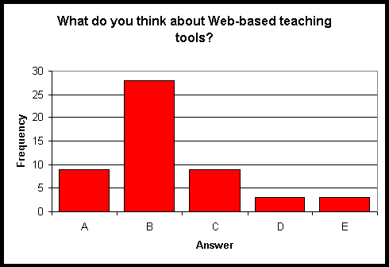

Besides "traditional" teaching tools (blackboard & chalk), your instructor also used some "modern" teaching tools such as software presentation and Web-based tools. What do you think about these tools?
They were interesting and very helpful for understanding statistical concepts and ideas.
They were interesting and somewhat helpful.
They were interesting, but not very helpful.
They were complete waste of time.
I don't know - it was so nicely warm and dark in the classroom that I couldn't help falling asleep during presentations.

Have you used "standard" packages such as Excel or SAS for your homework assignments when using software was recommended?
Yes, frequently.
Sometimes.
Never.
Have you used Web-based packages (Statlets, Webstat, Probability calculators etc.) when using software was recommended?